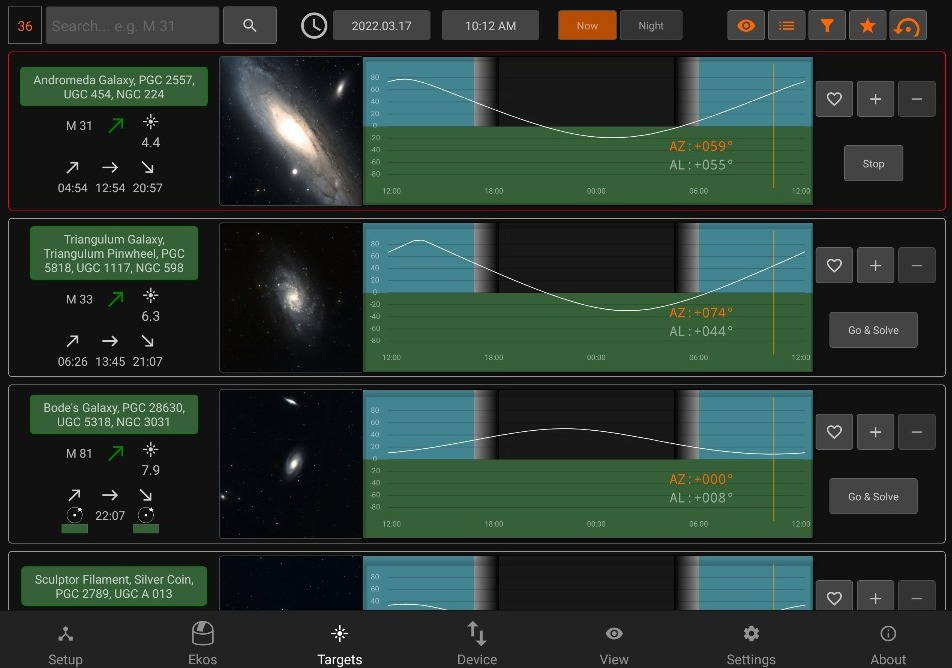
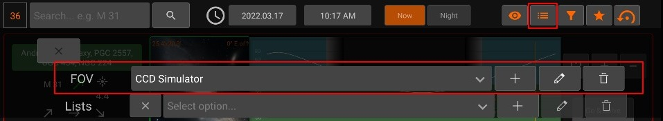
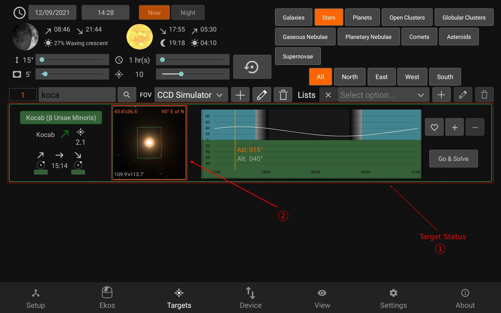
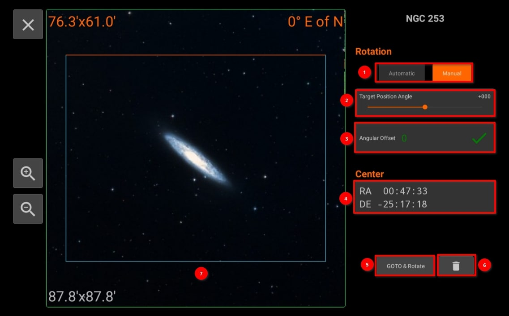
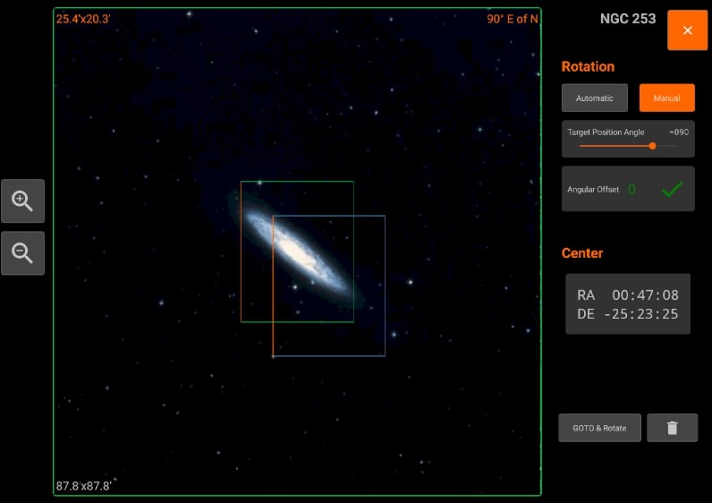

Framing Assistant

To open the framing assistant, make sure to have selected an FOV Profile and press Go & Solve.

StellarMate will command the mount to slew to the target location. This is indicated by a magenta border around the target. Once Slew is complete, the alignment process begins which is indicated by a yellow border. A red border indicated alignment error or alignment is not within threshold. Please wait until the solver iterates to center the target exactly in the center of the sensor. Once this is done, the border turns to Green. Now that the plate solving is complete, you may proceed to use the Framing Assistant tool that helps you in adjustment the orientation of the camera to match your desired orientation either manually or automatically if a rotator device is detected.
Once the status turns to green (1), press the image (2) to open the Framing Assistant

- The Framing Assistant has two modes of operation:
- Automatic: This mode is available if a rotator device (e.g. Nightcrawler) is coupled with your imaging camera and can rotate it on its axis. With a rotator, no manual intervention is necessary as StellarMate calculates the exact offset required to arrive at the target orientation.
- Manual: Using this mode, set the desired target rotation first, then check the required Angular Offset value. Go to your camera and rotate it manually by hand using your best judgement. Click Rotate & Capture to measure the new orientation of the camera. Once plate solving is complete, the new camera orientation and angular offset are updated. Repeat this process as many times as necessary until you are satisfied with the result. Your goal is to bring the Angular Offset down to zero.
- Adjust the rotation of the desired FOV orientation with the slider. The target FOV rectangle color is blue with orange designating the top. The green rectangle with orange on top is your camera's current FOV & orientation in the sky.
- Rotation offset in degrees between the current (Green) FOV and the target (Blue) FOV. When manually adjusting the camera, rotate it clockwise or counterclockwise as per the indicated icon.
- Displays the correct RA and DE.
- You can click "GOTO & Rotate" in order to go to the desired location and an image will be capture of the location depending on selected RA and DE.
- Reset the set values.
- Framing target can be seen in the blue color which you can move to different location by the gesture controls.

If Ekos is offline, you can Schedule your target coordinates by using framing assistant in Scheduler module.
